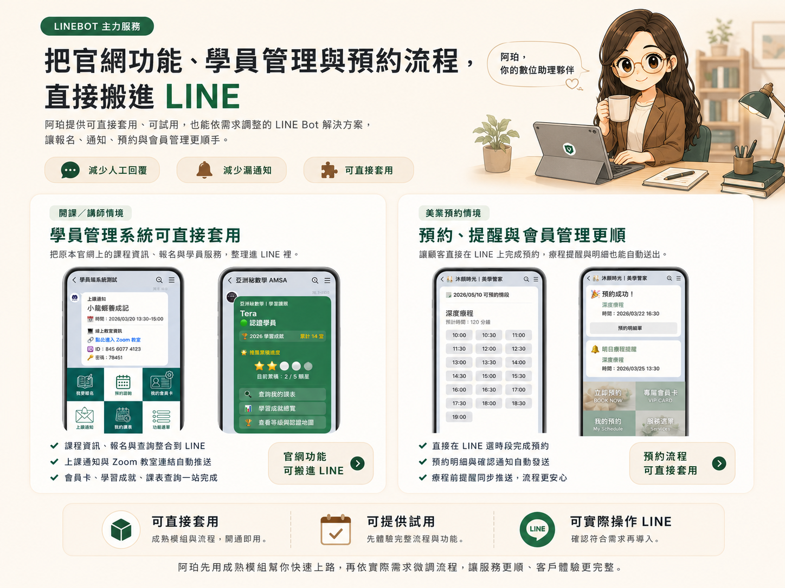
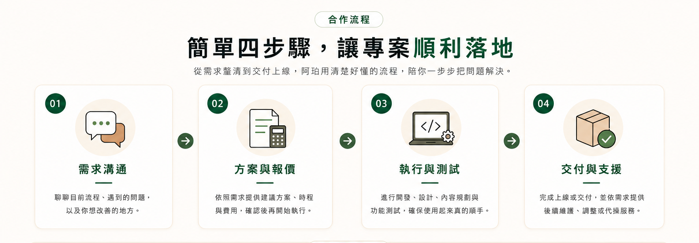

阿珀開發，把複雜營運流程整理成好用的數位系統
服務項目 開發流程 品牌內容 關於阿珀 聯絡我們 立即諮詢 預約諮詢 了解服務日常營運總是卡關，讓你無法專注在真正重要的事？
把官網功能、學員管理與預約流程直接搬進 LINE

簡單四步驟，讓專案順利落地

常見問題 FAQ
我的預算不高也可以做嗎？
可以。阿珀會依照你的階段，建議先從最需要改善的地方開始，用最划算的方式幫你解決最關鍵的問題。
一定要客製開發嗎？
不一定。有些工具可以直接上路，也可以依照你的流程客製調整，彈性配合你的需求。
Excel 表單壞了或想加功能可以處理嗎？
可以，可以協助檢查、維修、優化與重新設計，讓你的表單更穩定、好用又安全。
內容代操可以只做單次企劃嗎？
可以，可以單次規劃，也可以長期配合，依你的目標與預算彈性安排最適合的方案。